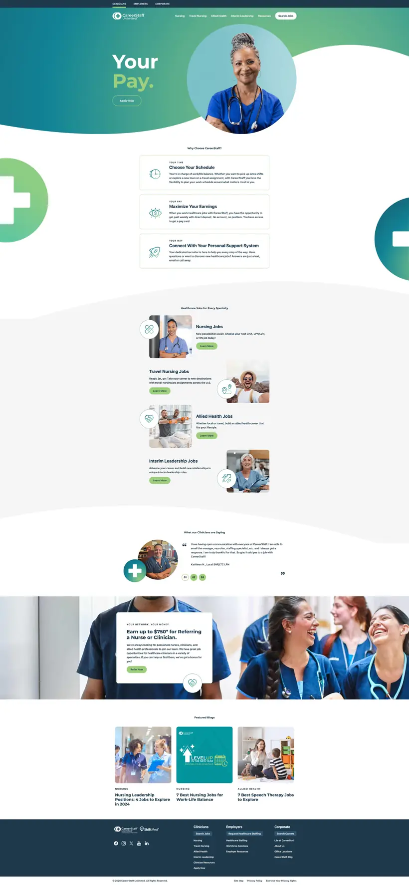
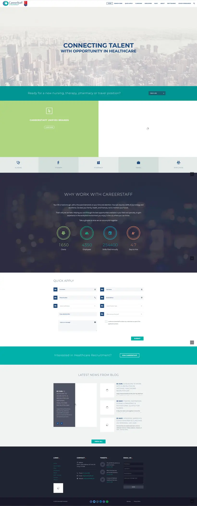
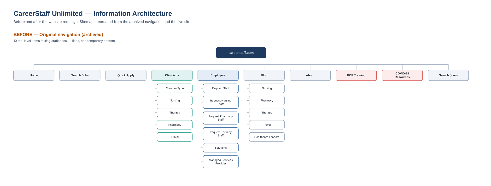
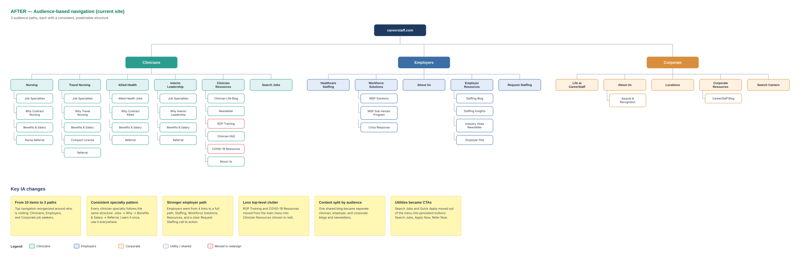
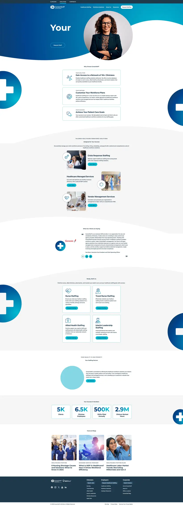
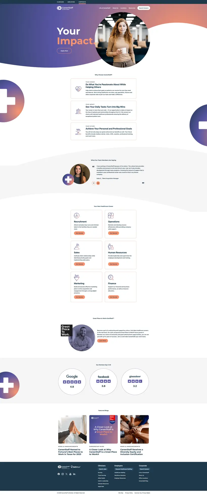

Clinicians
Nurses & applicantsPay, flexible schedules, jobs by specialty and a referral bonus, with Search Jobs and Apply Now always in reach.

One site. Three audiences. Faster everywhere.
Research, information architecture and optimization that turned a cluttered, slow website into a single audience-based experience for clinicians, employers and corporate job seekers.
Contribute to the website redesign, navigation, campaign landing pages and WordPress performance improvements.
Separate audience paths and clear hierarchy help clinicians and employers find relevant information.
The RFP-focused landing page contributed to securing two client accounts.
The original website mixed clinicians, employers, utilities and temporary content into one navigation, and heavy imagery slowed every page down.

The SWOT report and the before sitemap gave the team a shared picture of the problem. The persona research then shaped what each audience's section needed to say.
I mapped the old site structure, then designed the new audience-based structure: Clinicians, Employers and Corporate, each following a consistent, predictable pattern.
Viewing Before — original site structure


The top menu is built around who's visiting: Clinicians, Employers and Corporate.
Jobs → Why → Benefits & Salary → Referral. Learn it once, use it everywhere.
Employers went from 4 links to Staffing, Solutions, Resources and a clear Request Staffing CTA.
ROP Training and COVID-19 Resources moved into Clinician Resources.
One shared blog became separate clinician, employer and corporate blogs and newsletters.
Search Jobs and Quick Apply moved into persistent Search Jobs, Apply Now and Refer Now buttons.
Instead of separate microsites, all traffic stays on one site, which makes page performance easy to compare in Google Analytics. Each audience gets its own color so visitors always know where they are, and the top bar switches between them in one click.
Pay, flexible schedules, jobs by specialty and a referral bonus, with Search Jobs and Apply Now always in reach.

Proof and solutions: a 1M+ clinician network, managed and vendor services, client testimonials and results in numbers.

Culture first: career paths by department, team stories, Great Place to Work® recognition and public reviews.

Hover a screen to scroll the full page · Click to expand
The structure fixed the "where do I go" problem. Optimization fixed the "why is this so slow" and "why can't I find it" problems.
Optimized the site one page at a time, compressing and reformatting every image to 80KB or smaller without losing the professional look. Load times dropped by 80%.
Submitted XML sitemaps and set up a WordPress SEO plugin so Google, Microsoft Bing and Yahoo could find and index every page.
With the team, optimized video keywords, hashtags and descriptions for search. I also redesigned thumbnails to earn more clicks and tuned the channel itself.
Designed an RFP-focused landing page around one clear conversion path. It helped secure two new client accounts.